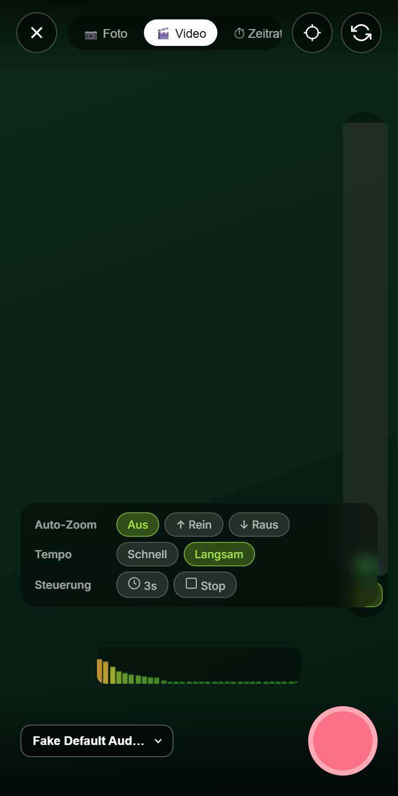

Halte dein Smartphone in die Natur — WaldOhr erkennt, welcher Vogel gerade singt. Fotografiere ihn, finde ihn auf der Karte wieder und führe dein eigenes Feldbuch.
Weckt dich rechtzeitig fürs Sonnenaufgangs-Shooting.
Funktioniert nur, solange WaldOhr geöffnet bleibt (Display an lassen).
5 Minuten nach BirdLife-Standard — alle erkannten Rufe werden automatisch erfasst.
Du läufst eine Strecke ab, GPS zeichnet die Route auf, das Mikrofon lauscht durchgehend. Am Ziel beendest du selbst.
Enthält alle Funde ab der eingestellten Erkennungssicherheit — mit Koordinaten und Uhrzeit.
WaldOhr startet das Lauschen von selbst — die App muss dafür geöffnet bleiben.
Kurz vor Sonnenaufgang, wenn die Vögel am lautesten singen. Braucht GPS.
Startet (und beendet) das Lauschen zu festen Zeiten — für Eulen und Nachtzieher.
Lauscht ab jetzt für eine feste Zeit — für unbeaufsichtigte Langzeit-Aufnahmen.
Änderungen werden sofort gespeichert.
Unter der ersten Schwelle erscheinen Arten nur live, nicht in Funde, Karte und Statistik. Automatisch gespeichert wird höchstens ein Ruf pro Art und Tag.
WaldOhr speichert alles nur auf diesem Gerät. Sichere regelmäßig, z. B. in einen Cloud-Ordner — bei Handywechsel oder App-Löschung ist sonst alles weg.
Die Vogel- und Tierstimmenerkennung basiert auf BirdNET, entwickelt vom K. Lisa Yang Center for Conservation Bioacoustics am Cornell Lab of Ornithology mit der TU Chemnitz. Modell lizenziert unter CC BY-NC-SA 4.0 · birdnet.cornell.edu
Artfotos stammen von Wikipedia / Wikimedia Commons. In Listen und Karten bleiben die Vorschaubilder bewusst ohne Bildunterschrift (bei 40–60 px nicht lesbar); Fotograf und Lizenz stehen verlinkt im Arten-Steckbrief — die bei Miniaturansichten übliche Form der Namensnennung nach CC BY / CC BY-SA.
Schriften: Outfit und Inter (SIL Open Font License), lokal mitgeliefert. Version
Tippe einen Abschnitt an, um ihn aufzuklappen.
WaldOhr ist dein Fernglas fürs Ohr: Halte das Smartphone in die Natur und die App erkennt, welcher Vogel gerade singt.
Der Kreis zeigt, ob gelauscht wird, und wie lange schon. Darunter siehst du das Spektrogramm; die dünne Leiste an seiner Unterkante ist der Mikrofonpegel.
Jetzt zu hören: alle Arten der letzten Sekunden mit Erkennungssicherheit in Prozent. „Neu“ steht nur beim allerersten Fund einer Art. Jede Zeile hat drei Knöpfe: Richtung finden, Foto und Ruf aufnehmen (die Aufnahme wird mit dem Artnamen beschriftet).
Nur Funde ab 70 % Sicherheit zählen für Karte, Funde und Statistik; ab 85 % speichert WaldOhr den Ruf automatisch als kurze Tonaufnahme — einmal pro Art und Tag. Beide Schwellen stellst du unter Einstellungen → Erkennung ein.
Mit „Richtung finden“ (über der Liste oder direkt bei einer erkannten Art) findest du grob, aus welcher Richtung ein Ruf kommt — mit nur einem Handy.
So geht's: Handy flach vor die Brust halten, die Oberkante zeigt nach vorn. Dann langsam einmal im Kreis drehen (ca. 20 Sekunden), am besten während der Vogel singt. Dein Körper schirmt Geräusche von hinten ab — in Richtung des Rufs ist es dadurch am lautesten.
Mit „Richtung übernehmen“ zeigt ein Pfeil dorthin. In Pfeilrichtung gehen und erneut scannen, wenn du näher dran bist.
Ehrlich gesagt: Das Ergebnis ist eine grobe Richtung (±30–45°). Singen mehrere Vögel gleichzeitig, gewinnt der lauteste. Weitere Runden machen das Ergebnis genauer.
Der Knopf „Zeitplan“ unter dem Kreis öffnet die Automatik:
Morgenchor startet kurz vor Sonnenaufgang, Nacht-Modus zu festen Zeiten (optional mit Endzeit), Dauerüberwachung lauscht ab sofort für eine feste Dauer — auf Wunsch mit Trigger-Aufnahme bei Geräuschen.
Funde zeigt deine Arten, Fundorte und die Statistik. Oben wählst du den Bereich: Heute hier (heutige Funde im Umkreis von ~3 km) oder Alle. Ein Abspiel-Symbol auf einer Artkarte spielt deine eigene Aufnahme.
Suchliste: Markiere Wunsch-Arten mit dem Stern (in Funde oder im Steckbrief). Wird eine davon erkannt, vibriert das Handy und ein Hinweis erscheint. Seltene Arten lösen den Alarm automatisch aus. Die Suche kennt alle ~6500 BirdNET-Arten.
Funde erscheinen als farbige Punkte (grün = häufig, gelb = selten, rot = Säugetier, blau = Suchliste). Dein Standort ist die cyanfarbene Figur. Punkt antippen → Name, nochmal antippen → Steckbrief.
Rechts oben: Position setzen (Stecknadel) — danach auf die Karte tippen, um deinen genauen Standpunkt festzulegen; präziser als GPS im Wald, hebt sich auf, sobald du dich bewegst. Darunter Alle Funde zeigen.
Route aufzeichnen speichert deinen GPS-Track; am Ende kannst du ihn als GPX exportieren.
Kamera öffnen: Unten über dem Auslöser wählst du Foto, Video oder Zeitraffer. Zoomen mit dem Regler oder mit zwei Fingern (auch ohne Hardware-Zoom); gespeichert wird genau der sichtbare Ausschnitt. Auto-Zoom (Video) fährt langsam rein oder raus — ohne am Handy zu wackeln.

Galerie: alle Tonaufnahmen und Fotos — abspielen, zuschneiden, herunterladen, teilen (auch als Video aus Foto + Ruf). Licht: goldene und blaue Stunde, Wetter, Mond. Wecker: Fotografen-Wecker zum Sonnenaufgang. Tipps: Ethik & Bildqualität.
Punkt-Zählung: 5-Minuten-Zählung nach BirdLife-Standard. Transekt-Zählung: eine Strecke ablaufen, GPS zeichnet die Route auf. Beide laufen auch im Tab Lauschen weiter (Banner über der Liste).
Protokolle listet alle Zählungen (mit GPX-Export für Transekte). Export ist die zentrale Stelle für eBird, ornitho.de, BirdNET Notebook und NABU — für „Heute hier“ oder „Alles“, auf Wunsch nur ausgewählte Sitzungen.
Alles bleibt nur auf diesem Gerät — kein Konto, keine Cloud.
Sichere deine Funde regelmäßig über Einstellungen → Daten → Backup erstellen, besonders vor einem Handywechsel oder App-Update.
Markierte Arten lösen wie seltene Funde sofort einen Alarm aus, sobald sie live erkannt werden.
Foto + Tonaufnahme als Video